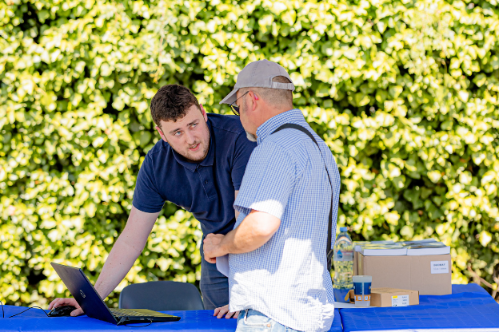

Sport, Présentation, profil
Lucas, un profil polyvalent

Lucas occupe actuellement le poste de responsable e-commerce chez DUOBAT, une entreprise spécialisée dans le négoce BTP. Sa mission ? Gérer les sites web de l'entreprise, optimiser les campagnes Google Ads, analyser les performances commerciales et gérer la relation avec les clients sur les plateformes numériques. Son rôle, bien que large, repose avant tout sur l’efficacité et la réactivité, des qualités qu’il met en œuvre au quotidien.
''
"Je me concentre sur l’impact direct de mes actions sur les résultats. Chaque décision est guidée par des données concrètes et un besoin de répondre rapidement aux attentes du marché", explique-t-il.''
Avant de rejoindre DUOBAT, Lucas a fait ses armes chez Frere SA, un acteur majeur de la vente de pièces automobiles. Lors de son stage, il a été chargé de développer les ventes sur les marketplaces, un secteur où il a rapidement démontré sa capacité à obtenir des résultats tangibles. "Quand je suis arrivé, l'entreprise réalisait 50 000 € de ventes annuelles sur les marketplaces. En quelques mois, ce chiffre est monté à près de 2 millions d'euros. Ce type de projet me motive particulièrement, car il a un impact direct et mesurable", souligne Lucas. Ce succès a été déterminant dans son parcours, le menant vers un CDD et marquant le début d’une carrière orientée vers le digital et l’optimisation des performances commerciales.
Aujourd'hui, il s'épanouit dans son rôle chez DUOBAT, où il est non seulement responsable des campagnes de publicité en ligne, mais aussi de l’analyse des données liées à la performance des sites et de la satisfaction client. ''
"Mon travail consiste à croiser les informations pour voir ce qui fonctionne et ce qui doit être ajusté. L’analyse me permet d’adapter la stratégie en temps réel", précise-t-il.''
apprécie tout particulièrement l’autonomie qui lui est laissée, lui permettant de tester des solutions nouvelles et d’apprendre constamment. "Cela me donne la possibilité de prendre des initiatives et de voir de près l’impact de mes choix sur les résultats."
À court terme, Lucas aspire à élargir ses compétences dans des domaines comme la programmation, la data et le management. Il veut approfondir sa maîtrise des outils numériques tout en se formant sur des aspects plus stratégiques de l’entreprise.''
"Je suis convaincu que la combinaison de ces compétences me permettra d’être plus polyvalent, d’avoir une vision plus globale et d’intervenir à différents niveaux d’une organisation", explique-t-il.''
À moyen terme, son ambition est claire : ouvrir sa propre entreprise et la développer à l’international.''
"Je veux créer quelque chose qui ait du sens, qui réponde à un besoin concret, et pouvoir déployer ce projet au-delà des frontières."''
L’ambition de Lucas est de se construire un profil à la fois technique et stratégique, capable de gérer des projets complexes avec des retours tangibles. Sa capacité à prendre du recul, à analyser des données et à prendre des décisions fondées sur des faits précis fait de lui un atout pour toute organisation cherchant à améliorer ses performances commerciales. Avec une vision claire de son avenir, il se prépare à prendre de nouvelles responsabilités, fort d’une expérience qui lui a déjà permis de démontrer son efficacité et sa capacité à relever des défis.